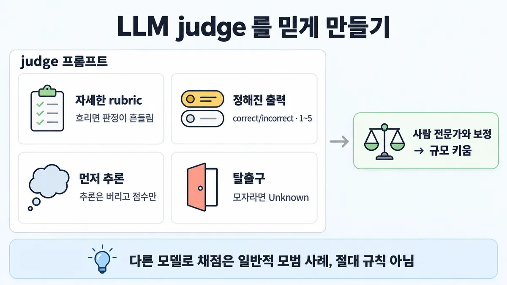
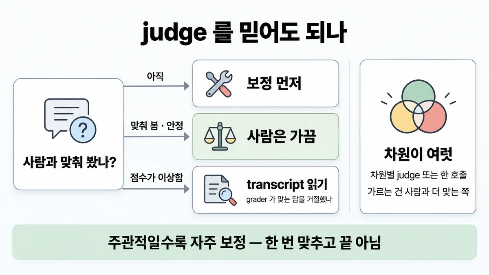
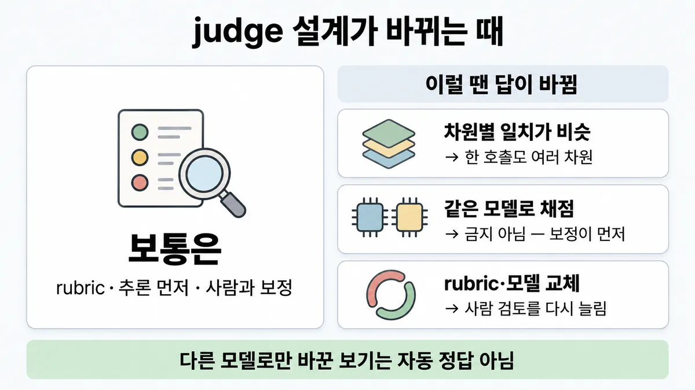

■ LLM-as-judge 설계
표시가 없는 문장은 공식 문서에서 확인한 내용이에요. 다른 표시는 읽는 법
왜 배우나 — 시험이 요구하는 것
시험 목표 4.2 평가 데이터·테스트 설계 · D4 평가 16%Design evaluation datasets and test frameworks using mixed methodologies
이 개념으로 푸는 판단 (할 수 있어야 하는 것)
- 4.2③ LLM 채점기를 어떻게 믿을 만하게 만드나? — LLM judge 설계 (채점 모델·출력 형태·탈출구·보정)
한눈에
LLM judge = 답을 LLM 에게 채점시키는 grader(채점기). 자세한 rubric + 정해진 출력 + 먼저 추론(reasoning) + "Unknown" 탈출구를 주고, 사람 전문가와 먼저 맞춰 본 뒤 규모를 키움
judge 는 비결정적이고 코드보다 비쌈 → 사람과 보정해야 정확 · grader 를 고를지 말지는 ■ grader 고르기
비유 이상 탐지 알림을 온콜의 수동 판정과 대조해 정탐률을 맞춘 뒤 자동화. 맞춰지면 수동 확인은 가끔만


ELI5
그림 대회에 심사 도우미를 새로 뽑는 거예요.
- 도우미에게 "색칠이 선 밖으로 나가면 감점" 같은 채점표를 줘요.
- 점수는 1점부터 5점 중에서만 고르게 해요.
- 점수 전에 이유를 먼저 생각하게 하고, 점수판엔 점수만 적어요.
- 잘 모르겠으면 "모르겠어요" 라고 해도 된다고 알려 줘요.
- 처음 몇 번은 선생님 점수와 맞는지 봐요. 잘 맞으면 가끔만 봐요.
개념 설명
원리
왜 LLM judge 인가
- 어조·공감·종합처럼 정답이 하나가 아닌 답은 코드로 측정 못 함. LLM 은 뉘앙스를 잡고 규모를 키울 수 있음.
- 대가 : 비결정적 · 코드보다 비쌈 · 사람과 맞춰 보기 전엔 정확한지 모름.
judge 프롬프트 네 부품
- rubric : 기준이 흐리면 같은 답에 다른 점수가 나옴(일관성 없는 판정). 한 기준에도 rubric 이 여럿 필요할 수 있음.
- 정해진 출력 : correct/incorrect 또는 1~5. 자유 글은 모아서 셀 수가 없음.
- 먼저 추론(reasoning), 추론은 버림 : 생각할 자리를 주면 복잡한 판단에서 채점이 좋아짐. 점수 집계엔
<result>만 씀. - 탈출구 : 정보가 모자라면 "Unknown". 없으면 judge 도 지어내서 확신 판정을 함(환각(hallucination)).
믿게 만드는 절차
- 사람 전문가 채점과 먼저 맞춰 봄 → 사람·모델 채점 차이가 작다는 확신 → 전체로 규모를 키움 → 안정되면 사람은 가끔.
- grader(채점기)도 틀림. transcript 와 점수를 읽어야 "에이전트 실수"와 "grader 가 맞는 답을 거절함"을 가름.
공식 문서끼리 갈리는 곳
- demystifying-evals : 차원마다 따로 떼어낸 judge 가 "도움될 수 있음".
- 멀티 에이전트 리서치 글 : 여러 judge 를 시험한 끝에 한 호출 · 한 프롬프트가 가장 일관되고 사람 판정과 맞았음.
- 둘을 잇는 기준 = 사람 보정 결과. 어느 쪽이든 사람과 더 맞는 쪽.
핵심 질문 두 개
- judge 가 사람 전문가와 얼마나 맞는지 재 봤나?
- judge 에게 기준(rubric) · 출력 형태 · 생각할 자리 · "모름" 이 모두 주어졌나?
규칙과 판단


갈림길
①②③④ judge 프롬프트 [4.2③]
자세한 rubric
모호한 rubric = 일관성 없는 판정
정해진 값
correct/incorrect 또는 1~5
먼저 추론
추론은 버리고 점수만
탈출구
정보가 모자라면 "Unknown"
⑤⑥ 몇 개 · 어느 모델 [4.2③]
둘 다 공식 문서에 있음
차원마다 따로 떼어낸 judge 가 도움될 수 있음 · 리서치 글은 한 호출 · 한 프롬프트가 가장 일관되고 사람 판정과 맞았음 → 가르는 건 사람과 더 맞는 쪽
다른 모델이 기본
"일반적으로" 모범 사례 — 절대 규칙 아님
⑦⑧ 믿어도 되나 [4.2③]
보정 먼저
사람 전문가와 꼼꼼히 맞춰 봄
사람은 가끔
튼튼해지면 사람 검토는 가끔
transcript 읽기
에이전트 실수인지, grader 가 맞는 답을 거절했는지
흐름
그림 속 이름·금액·시간·토큰 수는 예시예요. 공식 한도·동작은 카드 본문 값이 기준.
장면 글로 보기
칸 : 답 → judge → 점수 → 사람
규칙 (judge) : 자세한 rubric · 먼저 추론 · 모자라면 "Unknown"
질문 : judge 는 무엇을 돌려줘야 할까?
① 추론 → 점수만 ✓
- 시작 : 답 — 말 : “주문 #4821 은 내일 도착해요.”
- 채점 : 답 → judge : 자세한 rubric — 쪽지 : rubric : 첫 문장에 / 도착일을 반드시 언급
- 추론 : judge : 먼저 추론 — 쪽지 : <thinking> 첫 문장에 / 도착일 "내일" 있음 / </thinking>
- 점수 : judge → 점수 : 추론은 버리고 점수만 — 쪽지 : <result>correct</result>
- 끝 : 코드는
<result>만 읽음 — correct/incorrect 또는 1~5
② 근거 없이 확신 ≠
- 시작 : 답 — 말 : “환불은 3일 안에 들어와요.”
- 채점 : 답 → judge : 정보가 모자람 — 쪽지 : transcript 에 / 결제 수단 정보 없음
- 점수 : judge → 점수 : 탈출구 없이 판정 — 쪽지 : <result>correct</result>
- 끝 : "Unknown" 탈출구가 없으면 근거 없이도 판정 = 환각 판정
③ 사람과 맞추기 ✓
- 시작 : 사람 — 쪽지 : 전문가가 먼저 채점한 / 표본 100건
- 보정 : 사람 → judge : 사람 전문가와 꼼꼼히 맞춰 봄 — 쪽지 : 같은 100건을 judge 로 / 판정이 다르면 rubric 고침
- 점수 : judge → 점수 : 사람과 차이가 작음 — 쪽지 : 사람 ↔ judge / 불일치 적음 → 확장
- 끝 : 튼튼해지면 사람 검토는 가끔
규칙 원문 ①②③④⑤⑥⑦⑧ (갈림길로 그린 규칙)
-
rubric : 자세하고 명확하게. 예 "답은 첫 문장에 'Acme Inc.' 를 반드시 언급, 없으면 자동 incorrect" [4.2③]
한 사용 사례 · 한 기준에도 rubric 여러 개가 필요할 수 있음 · 모호한 rubric = 일관성 없는 판정
-
출력 : 정해진 값만 — correct/incorrect 또는 1~5 척도. 순수 정성 평가는 빠르게·대량으로 측정 못 함 [4.2③]
-
먼저 추론, 추론은 버리고 점수만 → 복잡한 판단에서 채점 성능이 오름 [4.2③]
공식 예 :
<thinking>에 추론,<result>에 correct/incorrect → 코드는<result>만 읽음Skilljar : 강점·약점·추론을 점수와 함께 요구 — 없으면 6 근처 중간 점수로 쏠림 (Skilljar)
-
탈출구 : 환각(hallucination)을 막으려 정보가 모자라면 "Unknown" 을 돌려주라고 지시 [4.2③]
-
차원 : 차원마다 구조화된 rubric, 차원마다 따로 떼어낸 judge 가 도움될 수 있음(한 judge 로 전부 말고) [4.2③]
단 리서치 글은 여러 judge 를 시험한 끝에 한 호출 · 한 프롬프트(0.0~1.0 점수 + 통과/실패)가 가장 일관되고 사람 판정과 맞았음 → 둘 다 공식 문서에 있음. 가르는 건 사람과 더 맞는 쪽
-
채점 모델 : 답을 만든 모델과 다른 모델로 채점 = "일반적으로" 모범 사례 [4.2③]
공식 예시 코드도 생성·채점에 같은 모델 id 를 씀 → 절대 규칙 아님
-
보정 : LLM judge 는 사람 전문가와 꼼꼼히 맞춰 봄 → 사람 채점과 모델 채점의 차이가 작다는 확신을 얻음 [4.2③]
튼튼해지면 사람 검토는 가끔 · 주관적인 리서치 품질은 전문가 판정과 자주 보정 · Descript : 제품팀이 정한 기준 + 주기적 사람 보정
-
grader 점검 : transcript 와 점수를 읽어야 grader 가 제대로인지 알 수 있음 — 실패마다 에이전트 실수인지, grader 가 맞는 답을 거절했는지 [4.2③]
우회·꼼수에 강하게 — 통과 = 진짜로 풀었을 때만 · 예 : 채점 버그 등을 고치자 42% → 95% (CORE-Bench)
더 깊이 : 판단 규칙 · 상황 변수 (설명)
판단 규칙
| 조건 | 답 | 근거 |
|---|---|---|
| judge 에 기준을 줌 | 자세하고 명확한 rubric | develop-tests "Have detailed, clear rubrics" |
| judge 출력 | correct/incorrect 또는 1~5 | develop-tests |
| 복잡한 판단 | 먼저 추론 → 추론은 버리고 점수만 | develop-tests |
| 정보가 모자랄 수 있음 | "Unknown" 탈출구 | demystifying-evals |
| 차원이 여럿 | 차원별 rubric · 따로 떼어낸 judge 가 도움될 수 있음 | demystifying-evals (단 리서치 글은 한 호출이 더 일관 — 뒤집히는 때 1) |
| 채점 모델 | 생성 모델과 다른 모델이 일반적 모범 사례 | define-success-full (코드 주석) |
| 늘리기 전 | 사람 전문가와 꼼꼼히 맞춰 봄 | demystifying-evals · develop-tests |
| 안정된 뒤 | 사람 검토는 가끔 | demystifying-evals |
| 주관적 과제(리서치 품질) | 전문가 판정과 자주 보정 | demystifying-evals |
| 점수가 이상함 | transcript 와 점수를 읽음 | demystifying-evals |
상황 변수
| 변수 | 값 | 답 쪽 | 등급 | 근거 |
|---|---|---|---|---|
| 과제의 주관성 | 높음(리서치 종합 · 공감) | 자주 보정 | demystifying-evals | |
| 과제의 주관성 | 정답이 분명함(목록 맞히기) | 한 judge 로 정답 여부만 봐도 효과적 | multi-agent-research-system | |
| 차원 수 | 여럿 | 차원별 judge 또는 한 호출 — 사람과 더 맞는 쪽 | 미해결 | 뒤집히는 때 1 |
| 보정 상태 | 아직 | 전체에 돌리기 전 사람 표본과 맞춤 | develop-tests | |
| 보정 상태 | 안정됨 | 사람은 가끔 | demystifying-evals | |
| 채점 모델 | 생성 모델과 같음 | 흠이지만 결정타는 아님 — 보정이 먼저 | define-success-full | |
| 출력 형태 | 자유 글 평가 | 정해진 값으로 바꿈 | develop-tests | |
| 점수 쏠림 | 다 6점 근처 | 강점·약점·추론을 함께 요구 | Skilljar 287742 | |
| 비용 | judge 호출 수가 차원 수만큼 늘어남 | 계산해 보고 결정 | 계산 | 뒤집히는 때 1 |
연습 문제
고객지원 답을 채점하는 LLM judge 가 채점에 필요한 주문 정보가 transcript 에 없는 답까지근거 모자람 전부 correct/incorrect 로 자신 있게 판정한다. 팀원은 답을 만든 모델과 다른 모델로 judge 를 바꾸면 해결된다고 한다. judge 프롬프트에 무엇을 더할까?
시험 대비
함정
- 답을 만든 모델이 스스로 채점 → 다른 모델이 일반적 모범 사례 (단 "다른 모델"만 붙은 보기를 자동 정답으로 X — 보정·rubric 이 빠졌는지 먼저)
- "한 judge 로 모든 차원 = 늘 오답" → 따로가 "도움될 수 있음", 한 호출이 더 일관된 사례도 공식
- regex 로 공감 판정 → 뉘앙스 없음 → ■ grader 고르기
- 사람만 전수 검토 → 가능하면 피함
- 근거가 모자라도 확신 판정 → 탈출구가 없으면 환각 판정. "Unknown" 을 줌
- 추론 없이 점수만 바로 → 복잡한 판단에서 성능이 떨어짐
- "좋은지 설명해 줘" 같은 순수 정성 평가 → 빠르게·대량으로 측정 못 함
- 사람과 한 번 맞춘 뒤 영영 안 봄 → 주관적일수록 자주 보정
신호
"Have detailed, clear rubrics"
"instruct the LLM to output only 'correct' or 'incorrect', or to judge from a scale of 1–5."
"Ask the LLM to reason first before producing an evaluation score, and then discard the reasoning."
"Generally best practice to use a different model to evaluate than the model used to generate the evaluated output"
"LLM-as-judge graders should be closely calibrated with human experts to gain confidence that there is little divergence between the human grading and model grading."
"To avoid hallucinations, give the LLM a way out, like providing an instruction to return “Unknown” when it doesn’t have enough information."
"grade each dimension with an isolated LLM-as-judge rather than using one to grade all dimensions."
"Once the system is robust, it’s sufficient to use human review only occasionally."


더 깊이 : 뒤집히는 때 · 오답 재료 (설명)
뒤집히는 때
1. 차원별 judge 가 오히려 손해인 때
- 조건 : 답 2,400건, 볼 차원 3개(공감 · 정확성 · 정책 준수), Haiku 4.5 로 채점.
- 계산 : 차원별 = 2,400 × 3 호출 × (입력 1,100 × $1 + 출력 200 × $5) / 1M = $15.12. 한 호출 = 2,400 × (입력 1,400 × $1 + 출력 350 × $5) / 1M = $7.56. 차원별이 약 2배.
- 전제 : 토큰 수는 가정 · 가격 = 2026-09-28 조회값(ko-pricing) · 캐시·배치 할인 뺌.
- 판단 : 사람 보정 표본에서 두 방식의 일치를 재서, 차원별이 더 맞으면 2배 비용을 감수함 · 비슷하면 한 호출. 리서치 글은 한 호출이 더 일관됐다고 했음.
- 등급 : 계산 (가격은 확인) · 어느 쪽이 맞는지는 미해결
- 근거 : demystifying-evals · multi-agent-research-system · ko-pricing
2. 같은 모델로 채점해도 되는 때
- 조건 : 생성과 채점을 같은 모델로 함.
- 판단 : 공식은 "일반적으로" 다른 모델을 권하지만, 같은 문서의 예시 코드는 생성·채점에 같은 모델 id 를 씀 → 금지가 아님. 보기 중 "다른 모델로 바꿈"만 있고 보정·rubric 이 없으면, "같은 모델 + 사람 보정" 보기가 더 나을 수 있음.
- 등급 : (문장·예시) · 추론 (보기 비교)
- 근거 : define-success-full
3. 추론을 버리면 grader 점검은 어떻게?
- 조건 : judge 추론을 버렸는데 점수가 이상함.
- 판단 : "버린다"는 점수 집계에서 뺀다는 뜻. grader 를 점검할 땐 transcript 와 점수를 읽음 — judge 추론도 그때 읽을 재료가 될 수 있음.
- 등급 : (버림 · transcript 읽기) · 추론 (judge 추론을 점검에 쓰기)
- 근거 : develop-tests · demystifying-evals
4. 사람 검토를 "가끔"에서 다시 늘릴 때
- 조건 : 보정이 끝나 사람 검토를 가끔으로 줄였는데, rubric 을 바꾸거나 judge 모델을 바꿈.
- 판단 : 공식은 "튼튼해지면 가끔"까지. 바뀐 judge 가 여전히 튼튼한지는 다시 맞춰 봐야 알 수 있음.
- 등급 : 업계 일반 (공식 문장 없음)
- 근거 : demystifying-evals
오답 재료
| 오답 | 왜 끌리나 | 왜 틀리나 | 근거 |
|---|---|---|---|
| "답을 만든 모델이 스스로 채점" | 한 번에 끝나 편함 | 다른 모델이 일반적 모범 사례. 더 큰 결함은 보정 없음 | define-success-full · demystifying-evals |
| "judge 하나로 모든 차원을 한꺼번에 — 늘 오답" | demystifying 이 따로를 권함 | "도움될 수 있다" 수준. 한 호출이 더 일관된 공식 사례도 있음 | demystifying-evals · multi-agent-research-system |
| "regex 로 공감을 판정" | 빠르고 싸고 재현됨 | 뉘앙스 없음, 표현만 다른 맞는 답도 틀림 처리 | demystifying-evals |
| "사람이 모든 답을 전수 검토" | 가장 믿을 만해 보임 | 가능하면 피함. 사람은 보정·가끔 | develop-tests · demystifying-evals |
| "근거가 부족해도 반드시 판정하게" | 빈칸 없는 결과표 | "Unknown" 탈출구가 없으면 환각 판정 | demystifying-evals |
| "점수만 바로 출력하게(추론 없이)" | 토큰이 줄어 보임 | 추론 먼저가 복잡한 판단에서 성능을 올림 | develop-tests |
| "judge 에게 품질을 자유롭게 서술하게" | 풍부한 피드백 | 순수 정성 평가는 빠르게·대량으로 측정 못 함 | develop-tests |
| "judge 점수를 그대로 믿고 transcript 는 안 읽음" | 자동화의 목적 | 채점 버그가 점수를 깎음(42% → 95%) | demystifying-evals |
참고
출처
- 가이드 목표 4.2 공식 시험 가이드 v1.0
- docs develop-tests (en-full)
- demystifying-evals
- multi-agent-research-system
- Skilljar API 287742
상태
- 공식 문서끼리 갈림 1곳(⑤ 차원별 vs 한 호출)
미해결
- 차원별 judge(demystifying-evals "can also help") vs 한 호출(multi-agent-research-system "most consistent") — 두 공식 글이 갈림. 시험이 "한 judge 로 모든 차원"을 오답으로 둘지 모름. 목록 4.2③ 은 이를 "매력적인 오답"으로 적었음 → 카드는 "늘 오답"으로 쓰지 않음.
- 보정 표본 크기 · 일치율 기준은 공식 숫자 없음 (책 템플릿
4-2-graders.html의 "표본 50건"도 공식 아님). - "다른 모델"이 다른 회사 모델인지, 같은 계열 다른 크기인지 원문에 없음(define-success-full 주석뿐).
- 목록 4.2③ 의 "영어 신호" 3개는 모두 원문에서 찾음(develop-tests · define-success-full · demystifying-evals). 단 "Generally best practice…" 는 본문이 아니라 코드 주석.